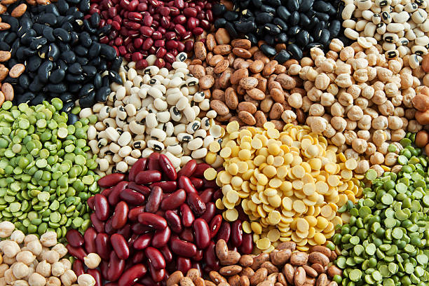

Beans

-
Carbohydrate Content: Beans are relatively high in carbs, with
about 20-30 grams per cup of cooked beans (varies by type).
-
Types: Black beans, chickpeas, kidney beans, and lentils contain
a mix of complex carbs, fiber, and some protein.
-
Net Carbs: Because of high fiber content, the net carbs are
typically lower than total carbs, making beans suitable in moderation
for low-carb diets.